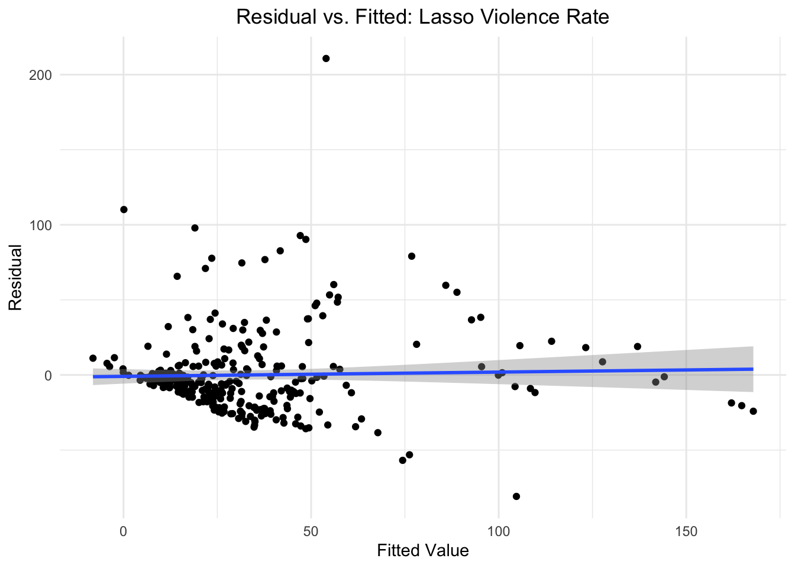

Regression
Background
Our motivation for doing regression is to determine the significant predictors of the two measures of violence: (1) homicide rate and (2) violence rate.
Violence is a complex and multifaceted issue, especially when considered in a global context. To better understand its various dimensions, we aimed to include a diverse set of predictors that reflect different underlying factors driving violence. Specifically, economic indicators like GDP, inflation rate, and the Human Development Index (HDI) capture aspects of economic inequality, which can influence social unrest and violence. Economic crime rate, personnel rate, and number of trafficked victims serve as indicators of the level of criminal activity in a country, as well as potential efficacy of law enforcement. Such indicators could be predictive of violence in the country. Lastly, alcohol rate is included to address the possibility that substance usage could influence the occurrence of violence.
Given the plausible theoretical linkage between each of our included predictor variables and the outcome variables of interest, we seek to develop models that can determine which factors are most predictive of homicide and violence rate.
We performed this analysis to uncover the extent to which different factors influence homicide rate and violence rate as outcomes.
Functions for Fitting Data
Best_subset
best_subset = function(predictor, outcome, criterion) {
optimal_subset <-
leaps(x = predictor, y = outcome, nbest = 3,
method = criterion, names = names(predictor))
if (criterion == "Cp") {
optimal_criterion <- optimal_subset[[criterion]] %>% min()
optimal_subset_idx <- optimal_subset[[criterion]] %>% which.min()
} else {
optimal_criterion <- optimal_subset[[criterion]] %>% max()
optimal_subset_idx <- optimal_subset[[criterion]] %>% which.max()
}
return(list(Criterion = optimal_criterion ,
Variable_Selection = optimal_subset$which[optimal_subset_idx,]))
}This function serves as a wrapper around the leaps function. It performs best-subset variable selection and then prints out the optimal model diagnostic and the predictor variables included in the regression model.
fit_glmnet
fit_glmnet = function(df, alpha, outcome, lambda) {
outcome_formula <- as.formula(paste(outcome, "~."))
predictor <- model.matrix(outcome_formula, data = df)[,-1]
predicted <- df %>% pull(outcome)
model_fit <-
glmnet(predictor, predicted, lambda = lambda, alpha = alpha)
model_cv <-
cv.glmnet(predictor, predicted, lambda = lambda, alpha = alpha)
lambda_opt = model_cv[["lambda.min"]]
model_fit <-
glmnet(predictor, predicted, lambda = lambda_opt, alpha = alpha)
return(model_fit)
}This function serves as a wrapper for the glmnet fitting processing and covers both the fitting and cross-validation process. It returns the glmnet object produced after fitting with optimal lambda value.
rmse_glmnet
rmse_glmnet = function(model, test, outcome) {
outcome_formula <- as.formula(paste(outcome, "~."))
predictor <- model.matrix(outcome_formula, data = test)[,-1]
predictions <- predict.glmnet(model, model[["lambda"]], newx = predictor,
type = "response")
predictions <- as.vector(predictions)
observed <- test %>%
pull(outcome)
return(caret::RMSE(predictions, observed))
}This is a wrapper function for the glmnet prediction and evaluation process. Given a fitted glmnet model, a test dataset, and an outcome variable of interest, this function predicts the avlues in the test dataset and then calculates and returns the rmse.
check_model
check_model = function(data, name) {
diagnostics = list()
resid_fit =
data |>
ggplot(aes(y = resid, x = pred)) +
geom_point() +
geom_smooth(method = "lm") +
labs(title = name,
y = "Residual",
x = "Fitted Value")
qqplot =
data |>
filter(is.finite(resid)) |>
ggplot(aes(sample = resid)) +
stat_qq() +
stat_qq_line(col = "red") +
xlab("Theoretical Quantiles") +
ylab("Residuals") +
ggtitle(name)
qqnorm(pull(data, resid), main = "QQ Plot of Residuals")
qqline(pull(data, resid), col = "red")
diagnostics = append(diagnostics, list(qqplot, resid_fit))
patchwork::wrap_plots(diagnostics)
}This is a plotting function to combine several different plot types that assess the assumptions of linear models
Descriptive Statistics
Visualizations of Distributions

All variables are skewed right, except for human development index which is bimodal and slightly left-skewed. Hence, we decided to apply ln transformations and Box-Cox transformations to ensure noramlity of the data.
Transformations
Transformation step involves writing a function for natural log
transformation and a function for Box-Cox transformation. The functions
are mapped into the nested list col which includes all continuous
variables in the merged_violence_df dataset.
Natural Log Transformation
ln_transform = function(value) {
return(log(abs(value)))
}
ln_df =
merged_violence_df |>
mutate(across(c(homicide_rate:alcohol_consumption_rate),
ln_transform))
ln_df |>
select(homicide_rate:alcohol_consumption_rate) |>
ggpairs()
Box-Cox Transformation
boxcox_transform = function(value) {
if (all(is.na(value))) {
return(value)
}
min_value = min(value, na.rm = TRUE)
if (min_value <= 0) {
value = value + abs(min_value) + 0.00001
}
if (length(unique(value)) == 1) {
return(value)
}
boxcox_result = MASS::boxcox(value ~ 1, plotit = FALSE)
lambda = boxcox_result$x[which.max(boxcox_result$y)]
if(lambda != 0) {
transformed_value = (value^lambda - 1) / lambda
} else {
transformed_value = log(value)
}
return(transformed_value)
}
boxcox_df = merged_violence_df |>
mutate(across(c(homicide_rate:alcohol_consumption_rate),
~ boxcox_transform(.)))
boxcox_df |>
select(homicide_rate:alcohol_consumption_rate) |>
ggpairs()
While the initial EDA suggested that logarithmic and Box-Cox transformations might be useful for improving normality, the results indicate that these transformations are not entirely necessary. The primary motivation for using these transformations is often to address skewness. However, after reviewing the data and the results of the transformations, we found that the original data already provides a reasonable representation of the underlying distribution.
While the natural logarithm helped with normality, the Box-Cox transformation did not substantially improve the data’s distribution. Box-Cox transformation requires shifting data to be strictly positive, which could introduce unnecessary complexity.
Box-Cox and ln transformations were performed with intentions of improving the approximate normality of each of the predictor distributions. However, neither transformation substantially approved the shapes of the distributions. Since no major improvements in normality were observed with the transformations, we ultimately decided to use the original data. Concerns regarding the normality of the distributions are alleviated by the Central Limit Theorem. With a sufficiently large amount of data points, we can assume that the sampling distribution is approximately normal. Using the convention that n > 30 allows for the assumption of approximate normality, our 310 observation dataset suffices to be supported by CLT.
Multicolliniearity Diagnostics
We used cor() to find the correlation between the eight
predictors of homicide rate and violence.
cor_matrix =
cor(merged_violence_df[, c("gdp", "inflation_rate", "unemployment_rate", "hdi",
"economic_crime_rate", "personnel_rate", "trafficked_victims",
"alcohol_consumption_rate")],
use = "pairwise.complete.obs")
ggcorrplot(cor_matrix,
method = "circle",
type = "lower",
lab = TRUE,
lab_size = 3,
colors = c("blue", "white", "red"), # Color scale (blue = negative, red = positive)
title = "Correlation Heatmap"
)
There is moderate correlation between hdi and
alcohol_consumption_rate, corr = 0.56, and moderately high
correlation between trafficked_victims and
gdp, corr = 0.77.
Data Pre-processing
In this step, we manipulate the merged_violence_df in preparation for later statistical modelling.
Define Lambda Range
lambda = 10^(seq(-2, 2.75, 0.1))Approach to Pre-Processing Data
Prior to performing any model fitting, we split our intial dataset into separate homicide and violence datasets, each of which includes the outcome variable and all numeric predictor variables. Specific predictor and outcome dataframes, and an outcome matrix, are created for later use in linear models, as well as lasso.
Pre-Processing for Homicide
homicide_df =
merged_violence_df |>
ungroup() |>
select(
homicide_rate, everything(), -violence_rate, -year, -country, -region,
-iso3_code) |>
drop_na()
homicide_matrix <- model.matrix(homicide_rate ~., data = homicide_df)[,-1]
homicide_predictors <- homicide_df %>%
select(-homicide_rate)
homicide_outcome <- homicide_df %>%
pull(homicide_rate)Pre-Processing for Violence
violence_df =
merged_violence_df |>
ungroup() |>
select(
violence_rate, everything(), -year, -homicide_rate, -country, -region,
-iso3_code) |>
drop_na()
violence_matrix <- model.matrix(violence_rate ~., data = violence_df)[,-1]
violence_predictors <- violence_df %>%
select(-violence_rate)
violence_outcome <- violence_df %>%
pull(violence_rate)Baseline MLR with Additive Effects
First, we decided to fit a baseline MLR with additive effects from all possible predictor variables to use as a point of reference for our modeling process. This step provides basic understanding of the extent to which different covariates contribute to the outcomes of interest.
Predict Homicide Rates
baseline_MLR_hom <- lm(homicide_rate ~ gdp + inflation_rate + unemployment_rate +
hdi + economic_crime_rate + personnel_rate + trafficked_victims +
alcohol_consumption_rate , data = merged_violence_df)
baseline_MLR_hom_fitted <- baseline_MLR_hom[["fitted.values"]]
baseline_MLR_hom %>%
broom::tidy() %>%
knitr::kable()| term | estimate | std.error | statistic | p.value |
|---|---|---|---|---|
| (Intercept) | 77.1223904 | 6.8949976 | 11.1852672 | 0.0000000 |
| gdp | 0.0000000 | 0.0000000 | 1.4401126 | 0.1508748 |
| inflation_rate | -0.7310164 | 0.1997345 | -3.6599403 | 0.0002978 |
| unemployment_rate | -0.3801340 | 0.1437800 | -2.6438594 | 0.0086262 |
| hdi | -79.7616365 | 9.3579304 | -8.5234270 | 0.0000000 |
| economic_crime_rate | 0.0047858 | 0.0037406 | 1.2793927 | 0.2017441 |
| personnel_rate | 0.0090816 | 0.0064515 | 1.4076778 | 0.1602584 |
| trafficked_victims | -0.0004297 | 0.0005839 | -0.7358718 | 0.4623817 |
| alcohol_consumption_rate | -0.2165605 | 0.2052374 | -1.0551708 | 0.2921934 |
Results from baseline MLR show that that inflation rate, unemployment rate and hdi are significant predictors of homicide rate at alpha = 0.05.
Check Baseline Homicide Model for Collinearity
vif_baseline_hom_MLR <- car::vif(baseline_MLR_hom)
vif_baseline_hom_MLR %>%
tibble(
variable = names(vif_baseline_hom_MLR),
VIF = vif_baseline_hom_MLR
) %>%
select(variable, VIF) %>%
knitr::kable()| variable | VIF |
|---|---|
| gdp | 2.396884 |
| inflation_rate | 1.176607 |
| unemployment_rate | 1.164411 |
| hdi | 2.455203 |
| economic_crime_rate | 1.700020 |
| personnel_rate | 1.306548 |
| trafficked_victims | 2.315171 |
| alcohol_consumption_rate | 1.896571 |
Results from VIF show that there is no multicollinearity issue (VIF < 5).
Predict Violence Rates
baseline_MLR_viol <- lm(violence_rate ~ gdp + inflation_rate + unemployment_rate +
hdi + economic_crime_rate + personnel_rate + trafficked_victims +
alcohol_consumption_rate , data = merged_violence_df)
baseline_MLR_viol_fitted <- baseline_MLR_viol[["fitted.values"]]
baseline_MLR_viol %>%
broom::tidy() %>%
knitr::kable()| term | estimate | std.error | statistic | p.value |
|---|---|---|---|---|
| (Intercept) | 44.2045930 | 19.9655911 | 2.2140388 | 0.0275754 |
| gdp | 0.0000000 | 0.0000000 | 2.7199674 | 0.0069083 |
| inflation_rate | -2.0163975 | 0.5783639 | -3.4863818 | 0.0005625 |
| unemployment_rate | -0.1171670 | 0.4163384 | -0.2814226 | 0.7785796 |
| hdi | -12.9837171 | 27.0974152 | -0.4791497 | 0.6321801 |
| economic_crime_rate | 0.1193201 | 0.0108316 | 11.0158771 | 0.0000000 |
| personnel_rate | -0.0628082 | 0.0186813 | -3.3620841 | 0.0008735 |
| trafficked_victims | 0.0082359 | 0.0016908 | 4.8709129 | 0.0000018 |
| alcohol_consumption_rate | -1.6323824 | 0.5942983 | -2.7467389 | 0.0063817 |
Results from MLR show that gdp, inflation rate, crime rate, personnel rate, number of trafficked victims per 100,000 and alcohol consumption rates are significant predictors of violence rate at significance level alpha = 0.01.
Calculate VIF for Baseline Violence MLR
vif_baseline_viol_MLR <- car::vif(baseline_MLR_viol)
vif_baseline_viol_MLR %>%
tibble(
variable = names(vif_baseline_viol_MLR),
VIF = vif_baseline_viol_MLR
) %>%
select(variable, VIF) %>%
knitr::kable()| variable | VIF |
|---|---|
| gdp | 2.396884 |
| inflation_rate | 1.176607 |
| unemployment_rate | 1.164411 |
| hdi | 2.455203 |
| economic_crime_rate | 1.700020 |
| personnel_rate | 1.306548 |
| trafficked_victims | 2.315171 |
| alcohol_consumption_rate | 1.896571 |
Results from VIF show that there is no multicollinearity issue (VIF < 5).
Lasso
We used lasso to as a feature selection tool to find the most important variables in predicting homicide rate and violence rate.
Predictors for Violence Rate
lasso_violence_fit =
glmnet(violence_matrix, violence_outcome, lambda = lambda)
lasso_violence_cv =
cv.glmnet(violence_matrix, violence_outcome, lambda = lambda)
lambda_violence_opt =
lasso_violence_cv[["lambda.min"]]
lasso_violence_fit =
glmnet(violence_matrix, violence_outcome, lambda = lambda_violence_opt)
lasso_violence_fit |>
broom::tidy() |>
knitr::kable()| term | step | estimate | lambda | dev.ratio |
|---|---|---|---|---|
| (Intercept) | 1 | 33.2327610 | 0.3981072 | 0.5192427 |
| gdp | 1 | 0.0000000 | 0.3981072 | 0.5192427 |
| inflation_rate | 1 | -1.7615771 | 0.3981072 | 0.5192427 |
| unemployment_rate | 1 | -0.0409621 | 0.3981072 | 0.5192427 |
| hdi | 1 | -1.7103106 | 0.3981072 | 0.5192427 |
| economic_crime_rate | 1 | 0.1133362 | 0.3981072 | 0.5192427 |
| personnel_rate | 1 | -0.0548232 | 0.3981072 | 0.5192427 |
| trafficked_victims | 1 | 0.0080624 | 0.3981072 | 0.5192427 |
| alcohol_consumption_rate | 1 | -1.5437306 | 0.3981072 | 0.5192427 |
lasso_predict_violence <-
predict.glmnet(lasso_violence_fit, lambda_violence_opt,
newx = violence_matrix, type = "response")
lasso_predict_violence <- as.vector(lasso_predict_violence)
lasso_violence_resid <- tibble(
residuals = violence_outcome - lasso_predict_violence
)The optimal lambda for violence rate is 0.3981072. Based on lasso
estimates, the coefficient for gdp was shrunk to 0.
Predictors for Homicide Rate
lasso_homicide_fit =
glmnet(homicide_matrix, homicide_outcome, lambda = lambda)
lasso_homicide_cv =
cv.glmnet(homicide_matrix, homicide_outcome, lambda = lambda)
lambda_homicide_opt =
lasso_homicide_cv[["lambda.min"]]
lasso_homicide_fit =
glmnet(homicide_matrix, homicide_outcome, lambda = lambda_homicide_opt)
lasso_homicide_fit |>
broom::tidy() |>
knitr::kable()| term | step | estimate | lambda | dev.ratio |
|---|---|---|---|---|
| (Intercept) | 1 | 75.5833480 | 0.0630957 | 0.3524531 |
| gdp | 1 | 0.0000000 | 0.0630957 | 0.3524531 |
| inflation_rate | 1 | -0.6907875 | 0.0630957 | 0.3524531 |
| unemployment_rate | 1 | -0.3553263 | 0.0630957 | 0.3524531 |
| hdi | 1 | -78.2143914 | 0.0630957 | 0.3524531 |
| economic_crime_rate | 1 | 0.0043479 | 0.0630957 | 0.3524531 |
| personnel_rate | 1 | 0.0085533 | 0.0630957 | 0.3524531 |
| trafficked_victims | 1 | -0.0002459 | 0.0630957 | 0.3524531 |
| alcohol_consumption_rate | 1 | -0.2056343 | 0.0630957 | 0.3524531 |
lasso_predict_homicide <-
predict.glmnet(lasso_homicide_fit, lambda_homicide_opt,
newx = homicide_matrix, type = "response")
lasso_predict_homicide <- as.vector(lasso_predict_homicide)
lasso_homicide_resid <- tibble(
residuals = homicide_outcome - lasso_predict_homicide
)The optimal lambda for homicide rate is 0.0630957. Similar to the
results from violence, the coefficient for gdp was shrunk
to 0.
Criterion-Based Procedure
Best-Subset Regression for Violence
Predict Violence Rate using R-Squared
violence_best_subset_rsq <-
best_subset(predictor = violence_predictors, outcome = violence_outcome,
criterion = "adjr2")
violence_best_subset_rsq## $Criterion
## [1] 0.5103599
##
## $Variable_Selection
## gdp inflation_rate unemployment_rate
## TRUE TRUE FALSE
## hdi economic_crime_rate personnel_rate
## FALSE TRUE TRUE
## trafficked_victims alcohol_consumption_rate
## TRUE TRUEPredict Violence Rate using Cp
violence_best_subset_Cp <-
best_subset(predictor = violence_predictors, outcome = violence_outcome,
criterion = "Cp")
violence_best_subset_Cp## $Criterion
## [1] 5.363491
##
## $Variable_Selection
## gdp inflation_rate unemployment_rate
## TRUE TRUE FALSE
## hdi economic_crime_rate personnel_rate
## FALSE TRUE TRUE
## trafficked_victims alcohol_consumption_rate
## TRUE TRUECollinearity check in Best-Subset Violence Model
subset_violence_lm <- lm(violence_rate ~ gdp + inflation_rate +
economic_crime_rate + personnel_rate + trafficked_victims +
alcohol_consumption_rate, data = violence_df)
subset_violence_fitted <- subset_violence_lm[["fitted.values"]]
vif_subset_violence_model <- car::vif(subset_violence_lm)
vif_subset_violence_model %>%
tibble(
variable = names(vif_subset_violence_model),
VIF = vif_subset_violence_model
) %>%
select(variable, VIF) %>%
knitr::kable()| variable | VIF |
|---|---|
| gdp | 2.346184 |
| inflation_rate | 1.070415 |
| economic_crime_rate | 1.373276 |
| personnel_rate | 1.240083 |
| trafficked_victims | 2.282920 |
| alcohol_consumption_rate | 1.168675 |
All variables have VIF value below 5, suggesting that there is no multi-colinearity concerns.
Interpretation
The results from criterion-based procedures suggest that significant predictors for violence_rate are gdp, inflation_rate, economic_crime_rate, personnel_rate, trafficked_victims and alcohol_consumption rate, with a total of 6 predictors. This yields the most appropriate Cp value (5.363), which is approximately close to the number of predictors, and highest adjusted R-squared (0.510).
Best Subset Regression for Homicide
Predict Homicide Rate using R-Squared
homicide_best_subset_rsq <-
best_subset(predictor = homicide_predictors, outcome = homicide_outcome,
criterion = "adjr2")
homicide_best_subset_rsq## $Criterion
## [1] 0.3367418
##
## $Variable_Selection
## gdp inflation_rate unemployment_rate
## TRUE TRUE TRUE
## hdi economic_crime_rate personnel_rate
## TRUE TRUE TRUE
## trafficked_victims alcohol_consumption_rate
## FALSE TRUEPredict Homicide Rate using Cp
homicide_best_subset_Cp <-
best_subset(predictor = homicide_predictors, outcome = homicide_outcome,
criterion = "Cp")
homicide_best_subset_Cp## $Criterion
## [1] 6.511243
##
## $Variable_Selection
## gdp inflation_rate unemployment_rate
## FALSE TRUE TRUE
## hdi economic_crime_rate personnel_rate
## TRUE TRUE FALSE
## trafficked_victims alcohol_consumption_rate
## FALSE FALSECollinearity Check in Best-Subset Homicide Model
subset_homicide_lm <- lm(homicide_rate ~ inflation_rate + unemployment_rate +
hdi + economic_crime_rate, data = homicide_df)
subset_homicide_fitted <- subset_homicide_lm[["fitted.values"]]
vif_subset_homicide_model <- car::vif(subset_homicide_lm)
vif_subset_homicide_model %>%
tibble(
variable = names(vif_subset_homicide_model),
VIF = vif_subset_homicide_model
) %>%
select(variable, VIF) %>%
knitr::kable()| variable | VIF |
|---|---|
| inflation_rate | 1.169288 |
| unemployment_rate | 1.034265 |
| hdi | 1.468355 |
| economic_crime_rate | 1.316883 |
All variables have VIF value below 5, suggesting that there is no multi-colinearity concerns.
Interpretation
For homicide_rate, the results are not as straightforward. The best model based on Cp and R-squared seems to be the model with 4 predictors because it has the lowest Cp (6.36), and a relatively high adjusted R-squared (0.331), indicating a good balance between fit and complexity. As more predictors are added, R-squared adjusts slightly but Cp levels off at around 6 predictors. The model with 4 predictors, which includes inflation_rate, unemployment_rate, hdi, personnel_rate, seems to be a better trade-off.
Model Comparison
Create Training and Testing Datasets
cv_df_violence <-
modelr::crossv_mc(violence_df, 100)
cv_df_violence <- cv_df_violence %>%
mutate(
train = map(train, as_tibble),
test = map(test, as_tibble)
)
cv_df_homicide <-
modelr::crossv_mc(homicide_df, 100)
cv_df_homicide <- cv_df_homicide %>%
mutate(
train = map(train, as_tibble),
test = map(test, as_tibble)
)Fit Models
Violence
cv_df_violence <-
cv_df_violence %>%
mutate(
MLR_all_var = map(train, \(df) lm(violence_rate ~ ., data = df)),
MLR_best_subset = map(train, \(df) lm(violence_rate ~ gdp + inflation_rate +
economic_crime_rate + personnel_rate + trafficked_victims +
alcohol_consumption_rate, data = df)),
lasso = map(train, \(df) fit_glmnet(df, outcome = "violence_rate",
alpha = 1,lambda = lambda))
) %>%
mutate(
rmse_all_var = map2_dbl(
MLR_all_var, test, \(mod, test) rmse(model = mod, data = test)),
rmse_best_subset = map2_dbl(
MLR_best_subset, test, \(mod, test) rmse(model = mod, data = test)),
rmse_lasso = map2_dbl(
lasso, test, \(mod, test) rmse_glmnet(mod, test, "violence_rate"))
) %>%
select(starts_with("rmse_"))Homicide
cv_df_homicide <-
cv_df_homicide %>%
mutate(
MLR_all_var = map(train, \(df) lm(homicide_rate ~ ., data = df)),
MLR_best_subset = map(train, \(df) lm(homicide_rate ~ inflation_rate
+ unemployment_rate + hdi + economic_crime_rate, data = df)),
lasso = map(train, \(df) fit_glmnet(df, outcome = "homicide_rate",
alpha = 1,lambda = lambda))
) %>%
mutate(
rmse_all_var = map2_dbl(
MLR_all_var, test, \(mod, test) rmse(model = mod, data = test)),
rmse_best_subset = map2_dbl(
MLR_best_subset, test, \(mod, test) rmse(model = mod, data = test)),
rmse_lasso = map2_dbl(
lasso, test, \(mod, test) rmse_glmnet(mod, test, "homicide_rate"))
) %>%
select(starts_with("rmse_"))Comparing the RMSE
Violence
cv_df_violence %>%
pivot_longer(
everything(),
names_to = "Model",
values_to = "RMSE",
names_prefix = "rmse_"
) %>%
mutate(
Model = fct_inorder(Model)
) %>%
ggplot(aes(x = Model, y = RMSE)) +
geom_violin() +
ggtitle("RMSE by Model for Predicting Violence Rate") +
theme(plot.title = element_text(hjust = 0.5))
Examining the distribution of RMSEs for each of the 3 models for predicting violence rate, we see that they are relatively similar. It appears that the MLR including all predictor variables has greater spread than the other two distributions, as it has a higher upper bound in the violin plot.
The similarity in performance among all 3 models likely relates to the few number of predictor variables that exist in our studied dataset. In general, each of the 3 models will not differ by many predictor variables, and therefore perform similarly. Comparing the 3 models, the best subset regression model may be considered optimal as it reduces model complexity, without the further caveat of difficulty interpreting beta coefficients, as is the case with lasso models.
Homicide
cv_df_homicide %>%
pivot_longer(
everything(),
names_to = "Model",
values_to = "RMSE",
names_prefix = "rmse_"
)%>%
mutate(
Model = fct_inorder(Model)
) %>%
ggplot(aes(x = Model, y = RMSE)) +
geom_violin() +
ggtitle("RMSE by Model for Predicting Homicide Rate") +
theme(plot.title = element_text(hjust = 0.5))
Examining the 3 models we used to predict homicide rate, we see that the distribution of RMSE across 100-fold cross-validation are nearly identical. This is likely in regard to the few predictor variables included in our dataset. In particular, with such few predictor variables, lasso is likely not the most well-suited for this task, as there is not a serious need to reduce model complexity. Consequently, the number of variables included in each of the 3 models is quite similar, and the difference of 1 or 2 included predictors between each of the models does not produce a substantial change in model effectiveness. Comparing the 3 models, the best subset regression model may be considered the best as it reduces model complexity but maintains ease of interpretability of beta coefficients.
Model Diagnostics
All Variables included MLR
baseline_hom_resid_df =
merged_violence_df |>
add_residuals(baseline_MLR_hom) |>
add_predictions(baseline_MLR_hom)
baseline_viol_resid_df =
merged_violence_df |>
add_residuals(baseline_MLR_viol) |>
add_predictions(baseline_MLR_viol)
check_model(baseline_hom_resid_df, "MLR All Predictors Homicide Rate") 

check_model(baseline_viol_resid_df, "MLR All Predictors Violence Rate")
 Examining the QQ-plots for the MLRs with all predictor variables
included, we notice that our assumption of normality of residuals may be
in violation, as there appear to many lower-bound and upper-bound
outliers that do not fall along the reference line. Regarding the plots
of fitted values versus residuals, we see differing results based on
whether homicide rate or violence rate is the outcome variable. With
homicide as the outcome variable, we can see residuals oscillate above
and below the reference line, indicating approximate linearity of the
relationship between the predictors and the outcome variables. However,
the greater variability in the residuals as fitted values increase,
suggests that we are seeing heteroscedasticity. Regarding violence rate
as the outcome variable, we see both issues with heteroscedasticity and
linearity.
Examining the QQ-plots for the MLRs with all predictor variables
included, we notice that our assumption of normality of residuals may be
in violation, as there appear to many lower-bound and upper-bound
outliers that do not fall along the reference line. Regarding the plots
of fitted values versus residuals, we see differing results based on
whether homicide rate or violence rate is the outcome variable. With
homicide as the outcome variable, we can see residuals oscillate above
and below the reference line, indicating approximate linearity of the
relationship between the predictors and the outcome variables. However,
the greater variability in the residuals as fitted values increase,
suggests that we are seeing heteroscedasticity. Regarding violence rate
as the outcome variable, we see both issues with heteroscedasticity and
linearity.
Best Subset MLR
subset_homicide_resid_df =
merged_violence_df |>
add_residuals(subset_homicide_lm) |>
add_predictions(subset_homicide_lm)
subset_violence_resid_df =
merged_violence_df |>
add_residuals(subset_violence_lm) |>
add_predictions(subset_violence_lm)
check_model(subset_homicide_resid_df, "MLR Best-Subset Homicide Rate")

check_model(subset_violence_resid_df, "MLR Best-Subset Violence Rate")

Examining the QQ-plots for the MLRs using the best-subset of predictor variables, we once again notice that our assumption of normality of residuals may be in violation, as there appear to many lower-bound and upper-bound outliers that do not fall along the reference line. For the fitted versus residuals plot for homicide rate, we see violations of both linearity and homosecdascity. The equivalent plot for violence rate presents similar concerns regarding homoscedascity, but shows a greater spread of residuals along the horizontal reference line, and therefore better implies linearity of relationship between predictor variables and outcome.
Lasso
lasso_homicide_resid_df =
lasso_homicide_resid |>
pull(residuals) |>
bind_cols(lasso_predict_homicide) |>
rename(resid = "...1", pred = "...2")
lasso_violence_resid_df =
lasso_violence_resid |>
pull(residuals) |>
bind_cols(lasso_predict_violence) |>
rename(resid = "...1", pred = "...2")
check_model(lasso_homicide_resid_df, "Lasso Homicide Rate")

check_model(lasso_violence_resid_df, "Lasso Violence Rate")
Consistent with results from the QQ-plots of the previous two MLR models, lasso models for both homicide rate and violence rate show potential violations of the assumption of normality, as many lower-bound and upper-bound outlier residuals do not fall along the reference line. For the fitted versus residuals plot of homicide rate, we see possible heteroscedascity, while the equivalent plot for homicide rate shows both possible heteroscedascity and non-linearity.
Conclusion
Based on our comparisons of RMSE, we can conclude that our best-subset regression models are most accurate at predicting the outcomes: (1) Violence Rate and (2) Homicide Rate.
The best-subset regression model for predicting violence rate yielded an adjusted r-squared of and included the following variables a predictors: GDP, inflation rate, crime rate, personnel rate, trafficked victims, and alcohol consumption rate. The best-subset regression model for predicting homicide rate returned an r-squared of . The variables included in this model were inflation rate, unemployment rate, HDI, and crime rate.
Despite moderately high R-squared values for each of these models, we must acknowledge that the models’ performance and accuracy may suffer from certain drawbacks. In particular, model diagnostics revealed concerns regarding the normality, linearity, and homoscedascity of the dataset used to produce these models. Additionally, transformations applied to cope with the concerns regarding normality failed to produce more normalized distributions for any of the predictor variables. As a result, the R-squared values for our models may be inaccurate and different forms of modelling, such as a non-linear approach, may be better suited for exploring what variables predict violence and homicide rates.